Code
fig, ax = plt.subplots(figsize=(5.5, 4))
draw_net(ax, [3, 1], [["$y_{t-1}$", "$y_{t-2}$", "$y_{t-3}$"], [r"$\hat y_t$"]],
[blue, red_pink], "AR(3): inputs straight to the output")
plt.show()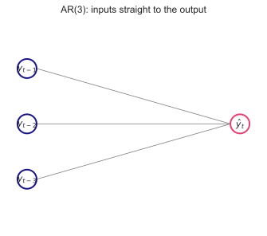
MATH840 | Time Series | Week 9
Kyiv School of Economics
Every model so far has been local: fitted to one series, with its own parameters, knowing nothing about any other series.
| Week | Model | Learns from |
|---|---|---|
| 1, 3 | benchmarks | one series, one rule |
| 2 | decomposition | one series |
| 4 | ETS | one series |
| 5 | regression | one series and its predictors |
| 6, 7 | ARIMA, dynamic regression | one series and its predictors |
| 8 | MSTL, harmonic regression, Prophet, combinations | one series |
Your Track B series has between 56 and 264 observations. Every parameter of your Lab 7 ARIMA was estimated from those, and nothing else.
1. NNAR — a non-linear AR
The same lags as an AR model, but the forecast is a non-linear function of them. Still local: one series, its own weights.
2. NeuralProphet — Prophet with lags
Week 8’s trend, seasons and events, plus an autoregressive network — the error dynamics Prophet was missing.
3. Global networks
One model trained on many series at once: LightGBM on lags, then the neuralforecast zoo — MLP, LSTM, TCN, DeepAR, N-BEATS, N-HiTS, TFT, PatchTST, TiDE.
The question for each is the one we have asked for eight weeks: does it beat the benchmark on a holdout it never saw? Next lecture takes the last step — pretrained models that forecast your series without being trained on it at all.
\[ \hat y_t = c + \phi_1 y_{t-1} + \phi_2 y_{t-2} + \phi_3 y_{t-3} \]
| Time series | Neural networks |
|---|---|
| lags \(y_{t-i}\) | inputs |
| coefficients \(\phi_i\) | weights |
| intercept \(c\) | bias |
| least squares | training on squared loss |
A linear regression on lags is a neural network — one with no hidden layer and no activation.
Each hidden neuron takes its own weighted sum of the lags and squeezes it through a non-linear activation:
\[ \begin{aligned} z_j &= b_j + \sum_{i=1}^{p} w_{ij}\, y_{t-i}\\[2pt] h_j &= s(z_j) = \frac{1}{1 + e^{-z_j}}\\[2pt] \hat y_t &= a + \sum_{j=1}^{k} v_j\, h_j \end{aligned} \]
\(k\) hidden neurons, each a different “view” of the lags. The sigmoid is what makes the model non-linear — without it the network collapses back to an AR model. Weights start at random values and are fitted by gradient descent on the squared error.
The model in FPP3 §12.4 — nnetar() in R — is exactly this network, with conventions that make it a forecasting method:
NNAR\((p, 0, k)\) is the non-seasonal version — the one we fit next.
The yearly mean number of sunspots, 1700–2008 — Yule fitted the first autoregressive model to this series in 1927.
spots = sm.datasets.sunspots.load_pandas().data
spots["year"] = spots["YEAR"].astype(int)
fig, axes = plt.subplots(1, 2, figsize=(12, 3.4), width_ratios=[2.2, 1])
axes[0].plot(spots["year"], spots["SUNACTIVITY"], color=slate, linewidth=1)
axes[0].set_title("Yearly sunspot number")
cycle = spots.query("1933 <= year <= 1944")
axes[1].plot(cycle["year"], cycle["SUNACTIVITY"], "o-", color=red_pink)
axes[1].set_title("One cycle: up in 4 years, down in 7")
plt.show()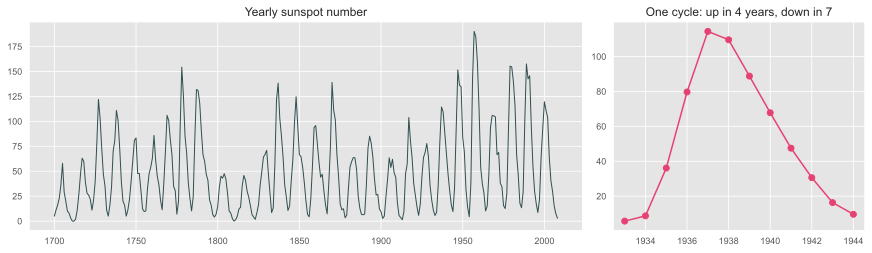
The cycles are asymmetric — a fast rise, a slow decline — and peaks vary in height. A linear AR model produces only symmetric cycles: up and down are the same equation.
y_ss = np.sqrt(spots["SUNACTIVITY"].to_numpy()) # square root keeps the forecasts positive
H_SS = 30
train_ss, test_ss = y_ss[:-H_SS], y_ss[-H_SS:]
p, k = 9, 5
mu, sd = train_ss.mean(), train_ss.std()
z = (train_ss - mu) / sd # scale the inputs
def lag_matrix(z, p):
X = np.column_stack([z[p - i - 1:len(z) - i - 1] for i in range(p)]) # y_{t-1}, ..., y_{t-p}
return X, z[p:]
X, target = lag_matrix(z, p)
nets = [MLPRegressor(hidden_layer_sizes=(k,), activation="logistic", alpha=1e-3,
max_iter=5000, random_state=seed).fit(X, target)
for seed in range(20)] # twenty networks
print(f"{len(target)} training rows, {p} inputs, {k} hidden neurons, "
f"{p * k + k + k + 1} weights per network")270 training rows, 9 inputs, 5 hidden neurons, 56 weights per networkA network predicts one step ahead. For \(h > 1\) the forecast is fed back as if it were data — the same recursion as ARIMA, but through a non-linear function:
def nnar_forecast(nets, z, h, noise=None, rng=None):
history, out = list(z[-p:]), []
for _ in range(h):
x = np.array(history[::-1][:p])[None, :] # the latest p values, newest first
value = np.mean([net.predict(x)[0] for net in nets]) # average of the twenty networks
if noise is not None:
value += rng.choice(noise) # a resampled training error
out.append(value)
history.append(value)
return np.array(out)
point_ss = (nnar_forecast(nets, z, H_SS) * sd + mu) ** 2 # back to the sunspot scaleThere is no formula for the forecast variance of a non-linear model. FPP’s answer: simulate. Add a resampled training error at every step, repeat many times, and read the interval off the paths.
residuals_ss = target - np.mean([net.predict(X) for net in nets], axis=0)
rng = np.random.default_rng(1)
paths_ss = np.array([(nnar_forecast(nets, z, H_SS, residuals_ss, rng) * sd + mu) ** 2 for _ in range(300)])
lo80, hi80 = np.percentile(paths_ss, [10, 90], axis=0)
years_test = spots["year"].to_numpy()[-H_SS:]
fig, ax = plt.subplots(figsize=(12, 3.8))
ax.plot(spots["year"], spots["SUNACTIVITY"], color=slate, linewidth=1, label="sunspots")
for path in paths_ss[:12]:
ax.plot(years_test, path, color=turquoise, alpha=0.35, linewidth=0.8)
ax.fill_between(years_test, lo80, hi80, color=red_pink, alpha=0.18, label="80% of 300 paths")
ax.plot(years_test, point_ss, color=red_pink, linewidth=2, label="NNAR(9, 5) forecast")
ax.set_xlim(1900, 2009)
ax.legend(loc="upper left")
ax.set_title("Thirty years ahead from 1978: twelve of the simulated paths, and the interval from all of them")
plt.show()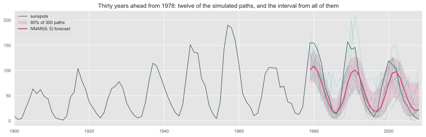
Three cycles ahead, the forecast keeps their timing and the fast-rise, slow-fall shape — not their height: averaging damps every peak to about 100, and the two real peaks above 150 fall outside the 80% band. Single paths reach those heights; their average cannot.
arima_ss = AutoARIMA().fit(train_ss)
ets_ss = AutoETS().fit(train_ss)
truth = test_ss ** 2
candidates_ss = {
"NNAR(9, 5)": point_ss,
str(ARIMASummary(arima_ss.model_)): arima_ss.predict(H_SS)["mean"] ** 2,
"AutoETS": ets_ss.predict(H_SS)["mean"] ** 2,
"mean of the training years": np.full(H_SS, (train_ss ** 2).mean()),
}
scoreboard(pd.DataFrame({
name: {"MAE": np.mean(np.abs(truth - f)),
"RMSE": np.sqrt(np.mean((truth - f) ** 2))}
for name, f in candidates_ss.items()}).T, decimals=1)| MAE | RMSE | |
|---|---|---|
| NNAR(9, 5) | 25.0 | 32.0 |
| ARIMA(3,0,0) with non-zero mean | 36.4 | 46.4 |
| AutoETS | 49.2 | 55.6 |
| mean of the training years | 47.2 | 57.3 |
That last point is the real limit of a local network — and the reason the last part of this lecture trains on many series at once.
Week 8’s verdict on Prophet: a convenient regression — piecewise trend, Fourier seasons, holiday windows — with no error dynamics. It never looks at yesterday. Its intervals were too narrow, and on cement and electricity it lost to seasonal naive.
NeuralProphet (Triebe et al., 2021) keeps Prophet’s decomposition and adds what was missing:
\[ \hat y_t = \underbrace{T(t) + S(t) + E(t) + F(t)}_{\text{Prophet's terms}} \; + \; \underbrace{A(t)}_{\text{AR-Net}} \; + \; \underbrace{L(t)}_{\text{lagged regressors}} \]
from neuralprophet import NeuralProphet
m = NeuralProphet(n_lags=14, # AR-Net: the last 14 days as inputs
n_forecasts=7) # one output per step: 7 days ahead, directly
m = m.add_future_regressor("tournament")
m.fit(train[["ds", "y", "tournament"]], freq="D")
forecast = m.predict(test[["ds", "y", "tournament"]]) # yhat1 ... yhat7n_forecasts=7 makes the forecast direct: one output neuron per horizon, not a recursion as in NNAR. Column yhat3 is the forecast made three days earlier.n_lags the model is Prophet refitted by gradient descent — a useful check that nothing else has changed.A package to use with care
NeuralProphet’s last release is 0.9.0, June 2024. It requires numpy < 2 and pandas < 3, so it does not install into this course’s environment, and in Colab it downgrades numpy. The results on the next slides were computed in a separate environment by infra/neuralprophet_messi.py; the deck reads them.
Week 8’s page views, on logs. Every model is fitted once, on the history to 30 September 2025, with the same tournament flag; the following year is the test. The AR-Net uses the actual views up to each forecast origin — that is what an autoregression does — but is never refitted. MAE on log views; naive \(= y_{t-h}\), snaive \(= y_{t-7}\), NP \(=\) NeuralProphet.
np_messi = pd.read_csv("../data/neuralprophet_messi.csv",
parse_dates=["ds"]).dropna()
views = pd.read_csv("../data/messi_wikipedia.csv",
parse_dates=["ds"]).set_index("ds")["y"]
log_views = np.log(views)
y_np = np_messi.set_index("ds")["y"]
mae = lambda f: float(np.mean(np.abs(y_np - f)))
by_h = pd.DataFrame({f"h={h}": {
"naive": mae(log_views.shift(h).reindex(y_np.index)),
"snaive": mae(log_views.shift(7).reindex(y_np.index)),
"AR-Net": mae(np_messi.set_index("ds")[f"AR-Net h={h}"]),
"NP, no lags": mae(np_messi.set_index("ds")["NeuralProphet"]),
"Prophet": mae(np_messi.set_index("ds")["Prophet"]),
} for h in range(1, 8)}).T
scoreboard(by_h, by="row")| naive | snaive | AR-Net | NP, no lags | Prophet | |
|---|---|---|---|---|---|
| h=1 | 0.228 | 0.392 | 0.223 | 0.491 | 0.568 |
| h=2 | 0.310 | 0.392 | 0.262 | 0.491 | 0.568 |
| h=3 | 0.324 | 0.392 | 0.287 | 0.491 | 0.568 |
| h=4 | 0.330 | 0.392 | 0.301 | 0.491 | 0.568 |
| h=5 | 0.360 | 0.392 | 0.318 | 0.491 | 0.568 |
| h=6 | 0.375 | 0.392 | 0.341 | 0.491 | 0.568 |
| h=7 | 0.392 | 0.392 | 0.345 | 0.491 | 0.568 |
window = np_messi[np_messi["ds"].between("2026-05-15", "2026-08-15")]
fig, ax = plt.subplots(figsize=(12, 3.1))
ax.plot(window["ds"], window["y"], color=slate, linewidth=1.3, label="actual")
for col, colour, style in [("Prophet", turquoise, "-"), ("NeuralProphet", blue, "-"),
("AR-Net h=7", orange, "-"), ("AR-Net h=1", red_pink, "--")]:
ax.plot(window["ds"], window[col], style, color=colour, linewidth=1.5, label=col)
ax.axvspan(pd.Timestamp("2026-06-11"), pd.Timestamp("2026-07-19"), color=orange, alpha=0.08)
ax.set_ylabel("log views")
ax.legend(loc="upper left", fontsize=8, ncol=5)
ax.set_title("The 2026 World Cup: models without lags cannot follow the matches; the AR-Net follows them a step behind")
plt.show()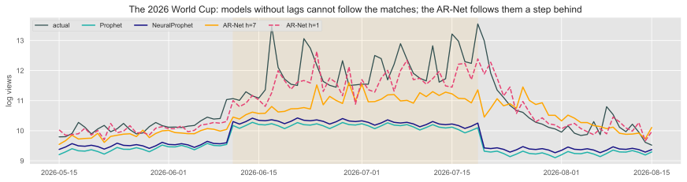
With no hidden layer the AR-Net is a \(7 \times 14\) matrix: one row of lag weights per horizon.
weights = pd.read_csv("../data/neuralprophet_ar_weights.csv", index_col=0)
fig, ax = plt.subplots(figsize=(12, 3.2))
image = ax.imshow(weights.to_numpy(), cmap="RdBu_r", vmin=-0.5, vmax=0.5, aspect="auto")
ax.set_xticks(range(14), [c.replace("lag ", "") for c in weights.columns])
ax.set_yticks(range(7), weights.index)
ax.set_xlabel("lag (days before the forecast origin)")
fig.colorbar(image, ax=ax, shrink=0.8)
ax.set_title("AR-Net weights: rows are horizons, columns are lags")
plt.show()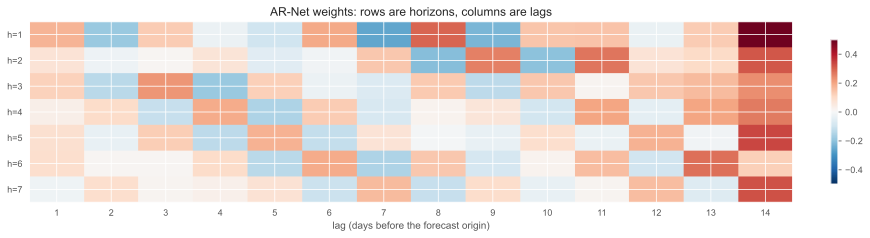
The largest weights are on lag 14 — the same weekday two weeks back — and the signs alternate from lag to lag. This is not an ARIMA \(\phi\) you can read: correlated lags share the work in arbitrary ways. NeuralProphet buys accuracy here, not a cleaner story.
Local — one model per series
Global — one model for all
A global model needs the series to be comparable, so each one is scaled by its own level first. After that, it learns “what happens after a pattern like this”, pooled over everything it has seen.
Evidence from the competitions: in M4 (2018) the winner was a hybrid — exponential smoothing inside a recurrent network trained across series — and the pure machine-learning entries did worse than the statistical benchmarks. In M5 (2020), on tens of thousands of Walmart series, the top of the leaderboard was dominated by LightGBM trained globally.
The 1428 monthly series of the M3 competition (Makridakis & Hibon, 2000) — micro, industry, macro, finance, demographic — each with its last 18 months held out, as in the competition.
m3 = pd.read_csv("../data/m3_monthly.csv", parse_dates=["ds"])
H_M3 = 18
test_m3 = m3.groupby("unique_id").tail(H_M3)
train_m3 = m3.drop(test_m3.index)
lengths = train_m3.groupby("unique_id").size()
print(f"{m3['unique_id'].nunique()} series; training length {lengths.min()} to {lengths.max()} months, "
f"median {lengths.median():.0f}")1428 series; training length 48 to 126 months, median 115Every model in the rest of this lecture is scored on these same 1428 × 18 held-out months, by MASE with \(m = 12\) — the metric you have used since Week 3.
Three local models, 1428 fits each — and the Week 8 combination of two of them:
local = StatsForecast(models=[SeasonalNaive(season_length=12, alias="snaive"),
AutoETS(season_length=12, alias="ETS"),
AutoTheta(season_length=12, alias="Theta")],
freq="MS")
forecasts = test_m3.merge(local.forecast(df=train_m3, h=H_M3), on=["unique_id", "ds"])
forecasts["ETS + Theta"] = (forecasts["ETS"] + forecasts["Theta"]) / 2The Theta method won M3 in 2000. It is simple exponential smoothing with drift — Week 4 — on a seasonally adjusted series, and it remains one of the hardest benchmarks to beat on this data.
The M5 recipe: a gradient-boosted tree model, one for all 1428 series, on lag features. Week 7’s dynamic regression with the lags as predictors — except that a tree finds the non-linearities itself.
from mlforecast import MLForecast
from mlforecast.target_transforms import Differences, LocalStandardScaler
import lightgbm as lgb
boosted = MLForecast(
models={"LightGBM": lgb.LGBMRegressor(n_estimators=300, learning_rate=0.05, verbose=-1)},
freq="MS",
lags=[1, 2, 3, 6, 12, 24], # the features
date_features=["month"],
target_transforms=[Differences([12]), LocalStandardScaler()], # D = 1, then each series scaled
)
boosted.fit(train_m3)
forecasts = forecasts.merge(boosted.predict(H_M3), on=["unique_id", "ds"])Differences([12]) is Week 7’s seasonal difference; LocalStandardScaler puts every series on one scale, which is what makes pooling them possible.One reasonable configuration, the kind you would try first — not tuned. Tuning a global model is a project of its own; the scored table below is what you get on the first attempt.
neuralforecast trains every modelEvery model in neuralforecast learns from the same kind of example: a window of input_size past values and the h values that follow, cut at a random point of a random series.
air = pd.read_csv("../data/air_passengers.csv", parse_dates=["ds"]).assign(unique_id="air")
example = air["y"].to_numpy()[:120]
fig, axes = plt.subplots(1, 3, figsize=(13, 2.6), sharey=True)
for ax, start in zip(axes, [5, 35, 70]):
ax.plot(example, color="lightgray", linewidth=1)
ax.plot(range(start, start + 24), example[start:start + 24], color=blue, linewidth=2, label="input: 24 values")
ax.plot(range(start + 24, start + 42), example[start + 24:start + 42], color=red_pink, linewidth=2,
label="target: the next 18")
ax.set_xticks([])
axes[0].legend(loc="upper left", fontsize=8)
fig.suptitle("Three training examples from one series; a batch mixes windows from many series", fontsize=11)
plt.show()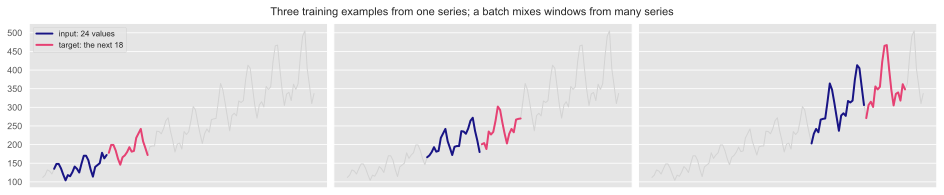
scaler_type): each window is scaled by its own level and spread, so a series in the millions and a series in the tens can share one set of weights.loss): MAE by default; a distribution or quantile loss gives intervals.max_steps): that many batches of windows, by gradient descent. Forecasting is one forward pass on the last window of each series.| Family | Models | How it reads the window |
|---|---|---|
| Fully connected | MLP, N-BEATS, N-HiTS, TiDE | all 24 values at once, as one input vector |
| Recurrent | RNN, LSTM, GRU, DeepAR | one value at a time, carrying a state forward |
| Convolutional | TCN | sliding filters over neighbouring values |
| Attention | TFT, PatchTST | every position weighs every other |
The simplest is the MLP: the window goes in as a vector, through hidden layers with ReLU, and all 18 forecasts come out at once — a direct forecast, not NNAR’s recursion:
\[ \hat{\mathbf{y}}_{T+1:T+h} = W_2\, \text{ReLU}\!\left(W_1\, \mathbf{y}_{T-23:T} + b_1\right) + b_2 \]
NNAR from the first section, made global and multi-output. Every other model in this section is a more careful way of turning the window into those \(h\) numbers.
NNAR sees a fixed window of \(p\) lags. A recurrent network (RNN) reads the series one value at a time and carries a hidden state \(h_t\) — a vector summary of everything so far:
\[ h_t = \tanh\left(W h_{t-1} + U y_t + b\right), \qquad \hat y_{t+1} = V h_t + c \]
fig, ax = plt.subplots(figsize=(12, 2.1))
for i, t in enumerate(["t-2", "t-1", "t", "t+1"]):
x = i * 2.2
ax.add_patch(FancyBboxPatch((x, 0.8), 1.2, 0.8, boxstyle="round,pad=0.05", facecolor="white",
edgecolor=turquoise, linewidth=2))
ax.text(x + 0.6, 1.2, f"$h_{{{t}}}$", ha="center", va="center", fontsize=13)
ax.annotate("", xy=(x + 0.6, 0.78), xytext=(x + 0.6, 0.1), arrowprops=dict(arrowstyle="->", color=blue))
ax.text(x + 0.6, -0.05, f"$y_{{{t}}}$", ha="center", va="top", fontsize=13)
if i < 3:
ax.annotate("", xy=(x + 2.18, 1.2), xytext=(x + 1.27, 1.2), arrowprops=dict(arrowstyle="->", color=red_pink, lw=2))
ax.text(x + 1.72, 1.32, "$W$", color=red_pink, fontsize=12, ha="center")
ax.set_xlim(-0.3, 8.2)
ax.set_ylim(-0.5, 1.8)
ax.axis("off")
ax.set_title("The same weights $W, U$ at every step: the network unrolled through time")
plt.show()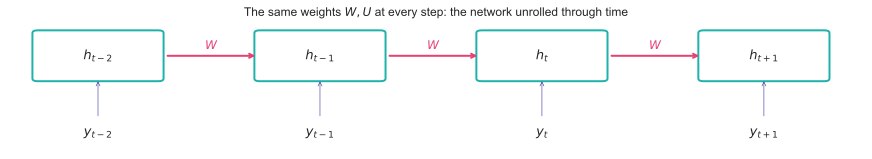
No fixed window, and the same weights at every step — as ARIMA’s recursion is to a regression on fixed lags.
Training an RNN multiplies by \(W\) once per step back in time. Over many steps the gradient shrinks to nothing (vanishing) or blows up (exploding) — so a plain RNN cannot learn that December depends on last December.
The LSTM (Hochreiter & Schmidhuber, 1997) adds a second state \(c_t\), the cell, changed only by gated, mostly additive updates:
\[ \begin{aligned} f_t &= \sigma(W_f[h_{t-1}, y_t] + b_f) & &\text{forget: how much of } c_{t-1} \text{ to keep}\\ i_t &= \sigma(W_i[h_{t-1}, y_t] + b_i) & &\text{input: how much new to write}\\ c_t &= f_t \odot c_{t-1} + i_t \odot \tanh(W_c[h_{t-1}, y_t] + b_c) & &\text{the cell: additive update}\\ o_t &= \sigma(W_o[h_{t-1}, y_t] + b_o), \quad h_t = o_t \odot \tanh(c_t) & &\text{output} \end{aligned} \]
With \(f_t \approx 1\) the cell passes information — and gradient — through many steps unchanged: ETS’s level equation, keep most of the old state, add a little of the new, learned. The GRU (Cho et al., 2014) is the same idea with two gates and no separate cell.
A temporal convolutional network (Bai, Kolter & Koltun, 2018) slides small filters along the series — Week 2’s moving average, with learned weights and a non-linearity, stacked in layers.
fig, ax = plt.subplots(figsize=(12, 3))
n, dilations = 16, [1, 2, 4] # layer l+1 combines t and t - dilations[l] of layer l
reach = {3: {15}}
for layer in (2, 1, 0):
reach[layer] = {s for t in reach[layer + 1] for s in (t, t - dilations[layer])}
for layer in range(4):
ax.scatter(range(n), [layer] * n, s=40, color="white", edgecolor=slate, zorder=3)
ax.scatter(sorted(reach[layer]), [layer] * len(reach[layer]), s=60, color=red_pink, zorder=4)
for layer, d in enumerate(dilations):
for t in range(d, n):
on_path = t in reach[layer + 1]
for src in (t, t - d):
ax.plot([src, t], [layer, layer + 1], color=red_pink if on_path else "lightgray",
linewidth=1.4 if on_path else 0.6, zorder=2 if on_path else 1)
ax.set_yticks(range(4), ["input", "dilation 1", "dilation 2", "dilation 4 → output"])
ax.set_xticks([])
ax.set_title("Each output sees only the past (causal), and the reach doubles with every layer (dilated)")
plt.show()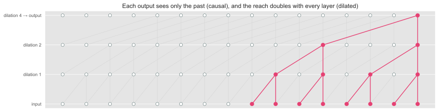
DeepAR (Salinas et al., 2020; Amazon) is a global LSTM whose output is not a number but the parameters of a distribution — here a Student-\(t\), \((\mu_t, \sigma_t, \nu_t)\):
\[ y_t \mid y_{1:t-1} \sim t_{\nu_t}\!\left(\mu_t, \sigma_t\right), \qquad (\mu_t, \sigma_t, \nu_t) = g(h_t) \]
N-BEATS (Oreshkin et al., 2020) has no recurrence and no convolution — only fully connected layers, arranged so that each block explains part of the window and hands on the rest:
For block \(\ell\) with input \(x_\ell\) (the window, at first):
\[ \begin{aligned} \theta^{b}_\ell, \theta^{f}_\ell &= \text{FC}_\ell(x_\ell)\\ x_{\ell+1} &= x_\ell - V^{b}_\ell\, \theta^{b}_\ell \quad \text{(backcast removed)}\\ \hat{\mathbf y} &= \sum_\ell V^{f}_\ell\, \theta^{f}_\ell \quad \text{(forecasts added)} \end{aligned} \]
On M4 its authors report it ahead of the competition’s hybrid winner — the first pure deep-learning model to get there.
The interpretable version may only output combinations of fixed curves — so whatever it forecasts is, by construction, a trend plus a season:
from neuralforecast import NeuralForecast
from neuralforecast.models import NBEATS
quiet = dict(enable_progress_bar=False, logger=False, enable_model_summary=False)
nbeats_i = NBEATS(h=24, input_size=48, stack_types=["trend", "seasonality"], n_blocks=[1, 1],
n_polynomials=2, n_harmonics=2, scaler_type="robust", max_steps=500,
random_seed=1, **quiet)
interpretable = NeuralForecast(models=[nbeats_i], freq="MS")
interpretable.fit(air.iloc[:-24][["unique_id", "ds", "y"]])
air_fc = interpretable.predict()n_polynomials=2: the trend stack may use \(1, t, t^2\). n_harmonics=2: the seasonality stack, two Fourier pairs per period — Week 5’s \(K\).
steps = np.arange(24)
fig, axes = plt.subplots(1, 3, figsize=(13, 3.6), width_ratios=[1, 1, 1.6])
for power, colour in zip(range(3), [slate, blue, red_pink]):
axes[0].plot((steps / 24) ** power, color=colour, linewidth=2, label=f"$t^{power}$")
axes[0].legend(fontsize=8)
axes[0].set_title("Trend stack: polynomial bases")
for k, colour in zip([1, 2], [turquoise, orange]):
axes[1].plot(np.cos(2 * np.pi * k * steps / 12), color=colour, linewidth=2, label=f"harmonic {k}")
axes[1].plot(np.sin(2 * np.pi * k * steps / 12), "--", color=colour, linewidth=1.2)
axes[1].legend(fontsize=8)
axes[1].set_title("Seasonality stack: Fourier bases")
axes[2].plot(air["ds"].iloc[-72:], air["y"].iloc[-72:], color=slate, label="actual")
axes[2].plot(air_fc["ds"], air_fc["NBEATS"], color=red_pink, linewidth=2, label="interpretable N-BEATS")
axes[2].legend(loc="upper left", fontsize=8)
axes[2].set_title("Air passengers: 1959–1960 forecast")
plt.show()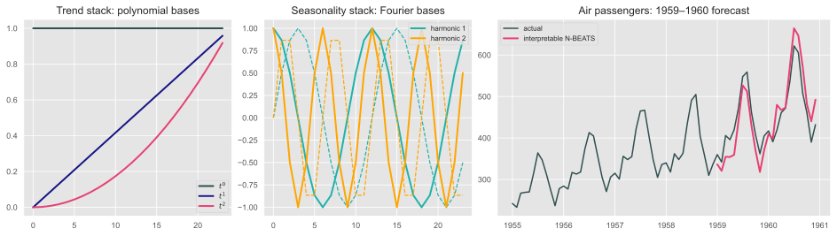
The network chooses the coefficients; the curves are Week 5’s trend and Fourier terms. There is also a decompose() method — but with a scaler each part is un-scaled on its own, so the parts do not add up to the forecast. Read them with care.
N-HiTS (Challu et al., 2023) is N-BEATS with two changes that make it fast and good at long horizons:
t_h = np.arange(18)
smooth = 3 + np.sin(2 * np.pi * t_h / 12) + 0.08 * t_h
fig, axes = plt.subplots(1, 3, figsize=(13, 2.6), sharey=True)
for ax, (k, title) in zip(axes, [(6, "stack 1: 3 coefficients → slow movement"),
(3, "stack 2: 6 coefficients → the season"),
(1, "stack 3: 18 coefficients → detail")]):
knots = t_h[::k]
ax.plot(t_h, smooth, color="lightgray", linewidth=3)
ax.plot(knots, smooth[::k], "o", color=red_pink)
ax.plot(t_h, np.interp(t_h, knots, smooth[::k]), color=red_pink)
ax.set_title(title, fontsize=10)
plt.show()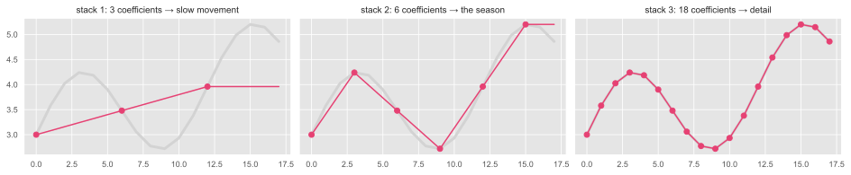
Attention lets every position in the window weigh every other: “to forecast next December, look hardest at last December” is learned, not specified.
Temporal Fusion Transformer (Lim et al., 2021; Google)
PatchTST (Nie et al., 2023)
TiDE (Das et al., 2023; Google), in the table that follows, is the counter-argument: an MLP encoder–decoder with covariates, as accurate as the transformers on its authors’ benchmarks, and much cheaper.
The same 1428 series, horizon and windows as LightGBM. Every model with one configuration, its library defaults plus three shared settings — nothing tuned:
from neuralforecast.models import MLP, LSTM, GRU, TCN, DeepAR, NHITS, TFT, PatchTST, TiDE
from neuralforecast.losses.pytorch import DistributionLoss, MAE
import time
shared = dict(h=H_M3, input_size=24, scaler_type="robust", max_steps=600, random_seed=1, **quiet)
zoo = {"MLP": MLP(**shared), "LSTM": LSTM(**shared), "GRU": GRU(**shared), "TCN": TCN(**shared),
"DeepAR": DeepAR(**shared, loss=DistributionLoss("StudentT", level=[80]), valid_loss=MAE()),
"NBEATS": NBEATS(**shared), "NHITS": NHITS(**shared), "TFT": TFT(**shared),
"PatchTST": PatchTST(**shared), "TiDE": TiDE(**shared)}
seconds = {}
for name, model in zoo.items():
start = time.time()
neural = NeuralForecast(models=[model], freq="MS")
neural.fit(train_m3)
forecasts = forecasts.merge(neural.predict(), on=["unique_id", "ds"])
seconds[name] = time.time() - startpoint = {name: name for name in zoo}
point["DeepAR"] = "DeepAR-median" if "DeepAR-median" in forecasts else "DeepAR"
board = m3_board(["snaive", "ETS", "Theta", "ETS + Theta", "LightGBM"]
+ [point[name] for name in zoo])
board.index = [i.replace("-median", "") for i in board.index]
board["training, s"] = pd.Series(seconds)
scoreboard(board, rules={"mean MASE": "lower", "median MASE": "lower",
"beats ETS on": "higher", "training, s": "lower"})| mean MASE | median MASE | beats ETS on | training, s | |
|---|---|---|---|---|
| snaive | 1.146 | 0.970 | 0.262 | |
| ETS | 0.863 | 0.711 | 0.000 | |
| Theta | 0.861 | 0.726 | 0.523 | |
| ETS + Theta | 0.841 | 0.696 | 0.572 | |
| LightGBM | 1.046 | 0.890 | 0.335 | |
| MLP | 0.889 | 0.731 | 0.472 | 10.956 |
| LSTM | 1.048 | 0.835 | 0.384 | 13.089 |
| GRU | 1.013 | 0.814 | 0.390 | 30.507 |
| TCN | 0.993 | 0.816 | 0.395 | 10.258 |
| DeepAR | 0.997 | 0.800 | 0.427 | 90.920 |
| NBEATS | 0.868 | 0.705 | 0.499 | 23.091 |
| NHITS | 0.879 | 0.722 | 0.477 | 22.967 |
| TFT | 0.955 | 0.758 | 0.454 | 484.280 |
| PatchTST | 1.152 | 0.916 | 0.298 | 98.565 |
| TiDE | 1.201 | 0.977 | 0.282 | 36.075 |
M3 is home ground for local models: short series (median 115 months) from unrelated domains — little for pooling to borrow. Global networks win where series are many, long and alike — M5’s products from one retailer, electricity meters, web traffic — and where someone tunes them.
point_col = "DeepAR-median" if "DeepAR-median" in forecasts else "DeepAR"
coverage_deepar = np.mean((forecasts["y"] >= forecasts["DeepAR-lo-80"]) & (forecasts["y"] <= forecasts["DeepAR-hi-80"]))
fig, axes = plt.subplots(1, 3, figsize=(13, 3.2))
for ax, uid in zip(axes, ["M1143", "M484", "M1176"]):
hist = train_m3[train_m3["unique_id"] == uid].tail(48)
fut = forecasts[forecasts["unique_id"] == uid]
ax.plot(hist["ds"], hist["y"], color=slate, linewidth=1)
ax.plot(fut["ds"], fut["y"], color="black", linewidth=1, label="actual")
ax.fill_between(fut["ds"], fut["DeepAR-lo-80"], fut["DeepAR-hi-80"], color=purple, alpha=0.2, label="DeepAR 80%")
ax.plot(fut["ds"], fut[point_col], color=purple, linewidth=1.8, label="DeepAR median")
ax.plot(fut["ds"], fut["ETS"], "--", color=blue, linewidth=1.3, label="ETS")
ax.set_title(uid, fontsize=10)
axes[0].legend(loc="upper left", fontsize=8)
fig.suptitle(f"Across all 1428 series, the 80% interval covered {coverage_deepar:.0%} of the held-out months", fontsize=11)
plt.show()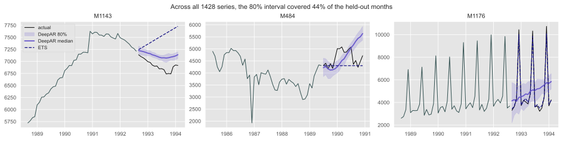
Every model above has a dozen hyperparameters: input_size, layer sizes, learning rate, max_steps, dropout. neuralforecast ships an Auto version of each that searches them on validation windows:
| Trap | What you see | Fix |
|---|---|---|
| A neural network on 100 observations | A perfect fit, a wild forecast | Few weights, a global model, or a simpler model |
| One random seed | A different forecast every run | Average several networks, or fix and report the seed |
| Unscaled inputs to a network | Training that never converges | Scale each series first |
| A global model on incomparable series | Big series dominate the loss | Scale per series: LocalStandardScaler, scaler_type |
| Neural results without a benchmark | “LSTM: MAE 412” — and nothing to compare it with | Seasonal naive and ETS on the same holdout, always |
| A daily model with no lags | Loses to “same day last week” | Add the lags: AR-Net, or a model that has them |
| Tuning on the test window | A score that will not repeat | Validation windows before the test, as in Week 3 |
| “Deep” read as “better” | A slow, opaque model that loses to Theta | It is one more candidate on the rolling origin |
neuralforecast model learns from the same windows; they differ in how they read one — all at once (MLP, N-BEATS, N-HiTS, TiDE), step by step (LSTM, DeepAR), by filters (TCN) or by attention (TFT, PatchTST).Tomorrow’s practice is the worked example for Lab 8, the last weekly lab: the Advanced Forecasting Methods lecture — combining your ETS, ARIMA and MSTL forecasts on your own series.
Next lecture: foundation models — networks pretrained on millions of series, applied to yours with no training at all, and how to tell whether they have seen your data before.
Before next week
Train N-HiTS on your Track B series — the code above, with your h and freq — and score it on the validation window you used in Lab 7. One series is a poor diet for a network: see by how much.